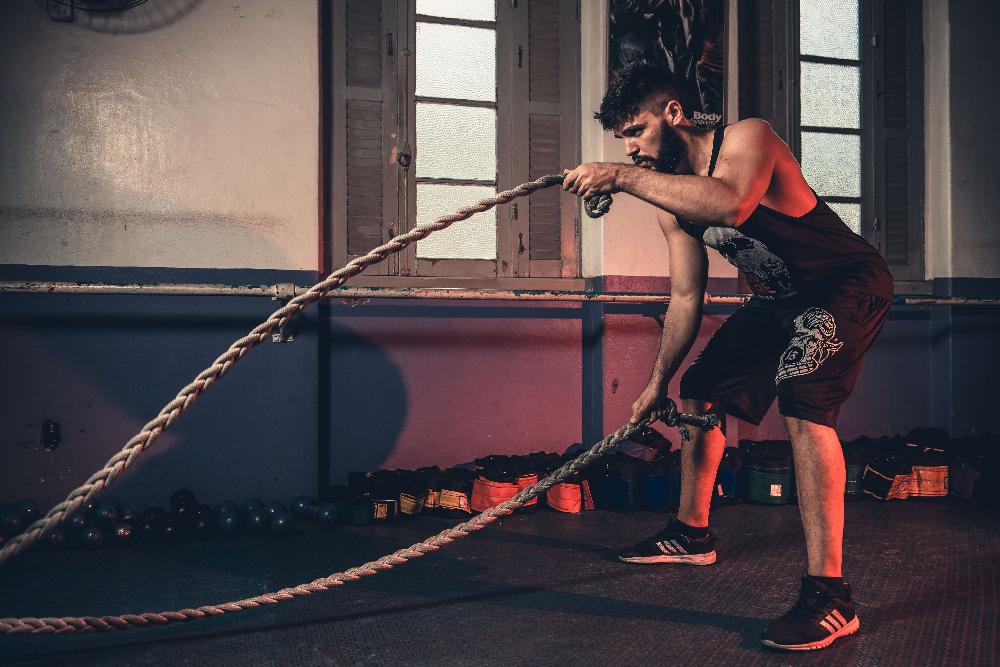

El entrenamiento funcional se basa en realizar ejercicios que se adaptan a los movimientos naturales del cuerpo humano para trabajar de forma global músculos y articulaciones. Una de sus principales ventajas es que se adaptan completamente a las condiciones físicas de cada persona, por eso resulta muy efectivo como entrenamiento personal: mejora la movilidad corporal, la agilidad y el equilibrio, desarrolla la salud cardiovascular, corrige la postura, fortalece la masa muscular y ayuda a mantener el peso.